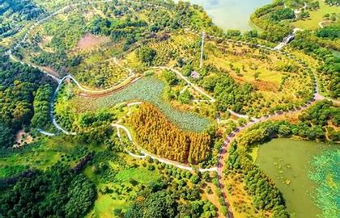
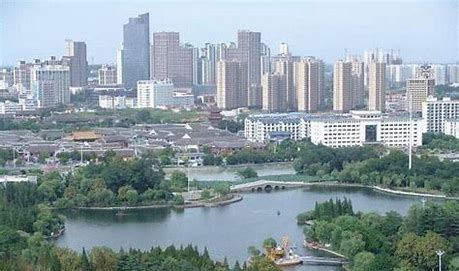

古城淮安 璀璨文明
welcome to huaian|淮安欢迎您！
淮安市名的由来可以追溯到1983年，当时实行市管县体制，淮阴地区行政公署撤销，改设地级市，名称为淮阴市。而淮阴县则改为淮阴区。在2001年，淮阴市正式更名为淮安市，而淮阴县也相应地改为淮安区。 在历史上，淮安曾经是漕运总督、南河总督的驻节地，这也反映了它在历史上的重要地位。同时，淮安市还拥有丰富的历史文化和旅游资源，如周恩来故居、淮安博物馆等。
月季（学名Rosa chinensis Jacq），月季是蔷薇科蔷薇属植物，又称长春花、四季蔷薇等，在淮安有悠久的历史和文化渊源。1986年12月，经市人大审议通过，将淮安人民喜爱的月季定为市花。
雪松是一种适应干旱环境的树种，其根系发达、茎干粗壮、叶细长，能够适应淮安市的气候条件。因此，淮安市的市树是雪松。
淮安市位于江苏省北部中心地域，江淮平原东部，地处长江三角洲地区，是苏北重要中心城市 ，长三角北部现代化中心城市，南京都市圈成员城市，淮河生态经济带首提首推城市。淮安市位于北纬32°43′00″—34°06′00″，东经118°12′00″—119°36′00″之间。市境东接盐城市，南邻安徽省滁州市，东南毗扬州市，北与连云港市、西北与宿迁市相连。东西最大直线距离132千米，南北最大直线距离150千米，面积10030平方千米。
地形地貌：淮安市地形西高东低，除市境西南部的盱眙县有丘陵岗地外，全市以平原为主体，地势平坦。境内河湖交错，水网纵横，京杭运河、淮沭河、苏北灌溉总渠、淮河入江水道、淮河入海水道、古黄河、六塘河、盐河、淮河干流9条河流纵贯横穿，全国五大淡水湖之一的洪泽湖大部分位于市境内。淮安市的土壤类型主要为黄淮和江淮冲积平原的土壤，包括水稻土、潮土、黄褐土等类型。
淮安市水资源丰富，境内拥有众多河流和湖泊。其中，京杭大运河、淮河入江水道、淮河入海水道、苏北灌溉总渠等河流纵横交错，洪泽湖、白马湖、高邮湖等湖泊镶嵌其中。这些河流和湖泊不仅为当地的农业灌溉和工业用水提供了充足的水源，同时也为水路交通和水上旅游提供了良好的条件。此外，淮安市还拥有丰富的地下水资源。在淮安市的北部和西部地区，地下水储量较为丰富，水质也比较好。这些地下水资源对于当地的农业生产和居民生活用水具有重要的意义。
淮安市属于温带季风气候区，四季分明，雨量充沛，光照充足。春季一般从3月开始，气温逐渐回升，降雨量逐渐增多；夏季一般从6月开始，气温较高，降雨量也比较大；秋季一般从9月开始，气温逐渐降低，降雨量也逐渐减少；冬季一般从11月开始，气温较低，降雨量也比较少。 淮安市的年平均气温约为14℃左右，年降水量在900-1000毫米之间。夏季受来自海洋的夏季风影响，降水充沛，雨热同期。冬季受来自大陆的冬季风影响，降水较少，天气干冷。
早在6000年前，淮安地区就已有人类活动，留下了许多宝贵的文化遗产。夏商周时期，淮安属于“淮夷”、“徐夷”聚居地。春秋战国时期，吴王夫差开凿了邗沟（即淮扬运河），沟通了长江、淮河两大水系，促进了淮安地区的发展。秦统一六国后，推行郡县制，淮安地区分属泗水郡和东海郡。西汉年间，淮安地区大体属临淮郡，同时增置了淮浦、射阳、富陵等县。东汉时期，淮安分属下邳国和广陵郡。 魏晋南北朝时期，淮安地区长期处于战争和对峙的前沿，建置混乱，隶属多变。隋唐五代时期，境内长期处于安定的环境，建置也较稳定，大抵淮北属泗州（治今盱眙县城北淮河对岸），淮南属楚州（治今淮安区淮城镇），经济得以持续发展和重新繁荣。北宋年间，境内较为太平，市境先属淮南路，后分属楚州、泗州。南宋和金、元对峙时期，淮安再度成为前线，为双方反复争夺，建置亦复杂多变。元代，境内先后置淮东安抚司、淮东总管府、淮安路（治今淮安区淮城镇）。明代淮安府辖山阳、清河、安东、盐城、桃源、宿迁、沭阳、睢宁、赣榆、邳州、海州，共9县2州，范围包括今苏北五市绝大部分地域。其间，还有漕运总督、南河总督驻节淮安。 清朝时期，境内置淮安府。明清时期，由于漕运和盐业的发达，淮安成为了重要的经济和文化中心。民国元年（1912），淮安府撤销，市境大部始属淮扬道（道署设今清江浦区），后属淮阴行政督察区、第七行政督察区。 新中国成立后，淮安成为了苏北地区的重要城市。1983年实行市管县体制后，淮阴地区行政公署撤销，改设地级淮阴市。2001年，淮阴市更名为淮安市。
淮安市的矿产资源主要包括石油、天然气、凹凸棒石黏土、芒硝、石灰岩和白云岩等。其中，石盐、凹凸棒石黏土、芒硝保有资源储量居全省第一位。具体来说： 石盐：探明石盐矿石资源储量315.96亿吨，主要分布于淮安区、淮阴区、清江浦区、洪泽区。 凹凸棒石黏土：探明凹凸棒石黏土资源储量1960.52万吨，主要分布于盱眙县。 芒硝：探明无水芒硝矿石资源储量6.79亿吨，主要分布于淮阴区、洪泽区。 此外，淮安市还有一定的石油和天然气资源，以及非金属矿产如石灰岩和白云岩等。
淮安市的植物资源非常丰富。全市有植物104科219属275种，其中野生植物185种。全市除古树名木以外的原生林木资源分布主要在盱眙丘陵山区，树种主要是朴树、黄连木、檀树、栎树、乌桕、桑树等。此外，淮安市还有大量的浮游植物、底栖动物、鱼类、两栖类、爬行类、兽类和鸟类等资源。
全市有野生动物资源近千种，包括浮游动物、底栖动物、鱼类、两栖类、爬行类、兽类和鸟类等。其中，部分动物为淮安市特有物种，如震旦鸦雀、东方白鹳、青头潜鸭等。还有许多珍稀濒危动物，如国家一级保护动物东方白鹳、青头潜鸭等，以及国家二级保护动物野大豆、粗梗水蕨、乌龟、震旦鸦雀、鸳鸯、中国淡水蛏等。这些珍稀濒危动物的保护对于维护生物多样性和生态平衡具有重要意义。是重要的鸟类迁徙通道之一，每年春秋两季都有大量鸟类经过此地。这些迁徙的鸟类不仅丰富了淮安市的动物资源，也为当地的生态旅游和观鸟活动提供了独特的资源。 
淮安市地处淮河流域中下游，拥有丰富的水资源。全市年平均降水量在1171.9毫米左右，地表水资源量约为48.758亿立方米。此外，淮安市还有较为丰富的地下水资源，其中淮河水系及南水北调工程初具规模，全市地下水资源储量丰富。
淮安市下辖4个区、3个县，另辖淮安经济技术开发区、淮安工业园区（计划单列）。全市有57个镇、38个街道，1382个行政村、202个居委会。
根据2022年统计数据，淮安市户籍人口为551.11万人，常住人口为474.00万人。
在民族构成上，淮安市有48个民族，汉族人口占绝大多数，占总人口的99.7%左右。其他少数民族人口约1.61万人，其中回族人口最多，约占少数民族总人口的67%左右。此外，淮安市还有苗族、彝族、壮族、布依族、满族、侗族、白族、土家族、哈尼族、傈僳族、傣族、藏族、黎族、朝鲜族等其他少数民族。
古城淮安 璀璨文明
welcome to huaian|淮安欢迎您！